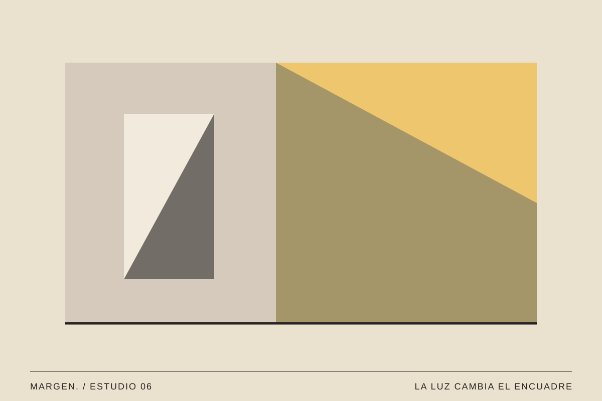
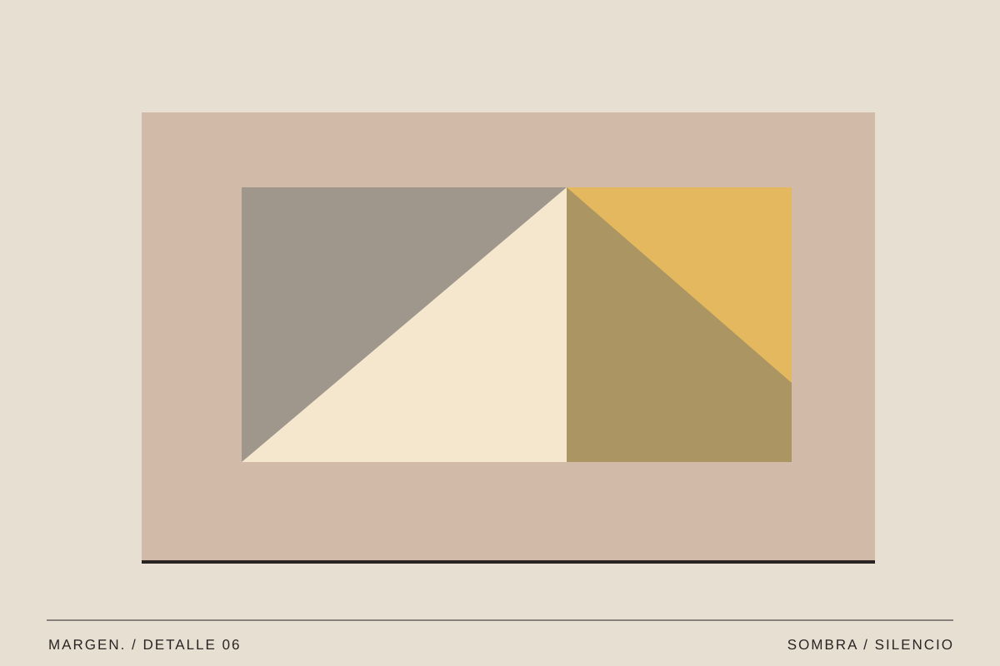

07 / Cultura / Vol. 001
La imagen cotidiana
Observar lo de siempre como si fuera la primera vez.
MARGEN. / Texto editorial ·

No todas las imágenes que nos interesan están en una exposición. Algunas aparecen en una pared, en la sombra de una ventana o en la manera en que dos colores coinciden por casualidad.
Aprender a detenerse
Pasamos por los mismos lugares tantas veces que dejamos de observarlos. Sabemos dónde está la puerta y por dónde cruzar, pero quizá nunca hemos prestado atención a la sombra que aparece a una hora concreta. La costumbre vuelve invisible parte del entorno.
Cambiar el ritmo puede ser suficiente para descubrirlo. Mirar hacia arriba, acercarnos a una textura o elegir un detalle en lugar del conjunto nos permite encontrar otras composiciones dentro de una escena conocida.
También ayuda cambiar el punto de vista. Una superficie que desde lejos parece uniforme revela imperfecciones y pequeñas variaciones al acercarnos. Mirar desde abajo puede convertir una barandilla en una sucesión de líneas; observar una esquina desde arriba puede hacer que dos colores se encuentren de una forma inesperada. No hace falta transformar el lugar para encontrar una composición: muchas veces basta con modificar nuestra posición ante él.

A veces, la imagen ya estaba ahí.
Encuadrar es elegir
Una fotografía deja parte del mundo fuera. Al recortar una fachada podemos convertir una construcción reconocible en una combinación de planos y líneas. Esa selección no cambia el lugar, pero sí lo que decidimos contar sobre él.
La luz también modifica la imagen. Una pared plana adquiere profundidad con una sombra; un color se transforma según el momento del día. Observar esas variaciones es una forma sencilla de entrenar la sensibilidad visual.
Encuadrar implica tomar una decisión sobre lo que queda fuera. Un fragmento de edificio puede parecer abstracto si eliminamos las ventanas y el suelo que nos permiten reconocerlo. Ese cambio no convierte la fotografía en algo menos verdadero; sencillamente centra la atención en otra característica del mismo espacio. Por eso conviene probar varias fotografías de una misma escena antes de elegir una: cada recorte sugiere una historia diferente.

Hacer una colección propia
Prueba a reunir cinco imágenes de un solo color durante una semana. Pueden ser objetos, carteles o fragmentos de edificios. Después, colócalas juntas y observa qué relaciones aparecen entre cosas que no parecían tener nada en común.
Una colección pequeña ya puede sugerir un tema. Lo interesante no es conseguir una fotografía perfecta cada día, sino desarrollar una mirada más atenta y encontrar preguntas en lo cercano.
Cuando reunimos imágenes, el orden puede transformar completamente la colección. Dos fotografías unidas por un color crean una relación formal; otras, organizadas por la hora del día, cuentan una pequeña evolución de la luz. También podemos presentar contrastes: superficies lisas frente a rugosas, espacios vacíos frente a saturados, sombras suaves frente a cortes muy marcados. La secuencia se convierte entonces en una forma de escribir con imágenes.
Una práctica de observación
La fotografía cotidiana no necesita un destino espectacular. Puede empezar como una costumbre breve: registrar una sombra, una textura o una coincidencia de formas durante el camino a casa. Al final de la semana, merece la pena revisar las imágenes con distancia y elegir únicamente aquellas que realmente aportan algo.
Quizá lo más interesante no sea la cantidad de fotografías que conseguimos, sino la manera en que cambia nuestra atención. Mirar lo conocido con curiosidad es una forma sencilla de descubrir nuevas preguntas visuales.